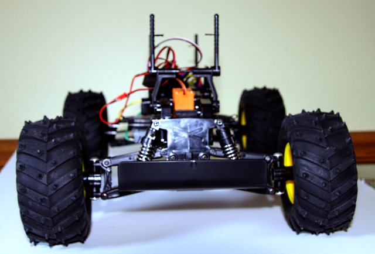
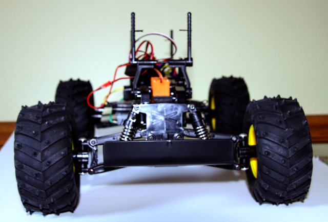
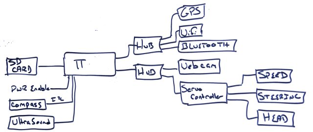
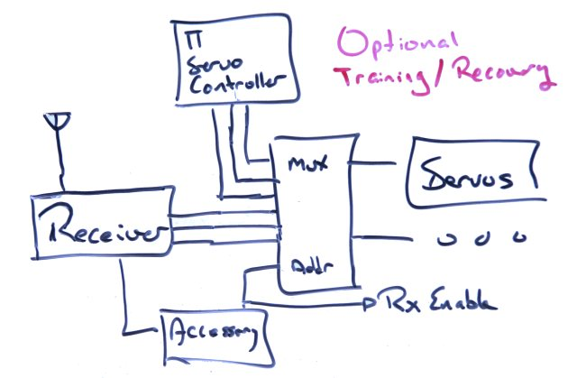
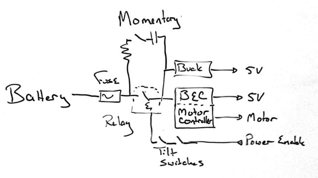
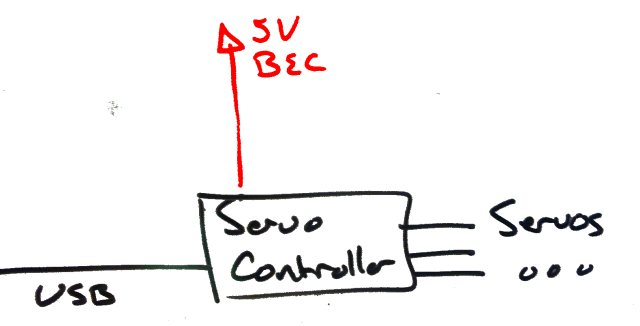
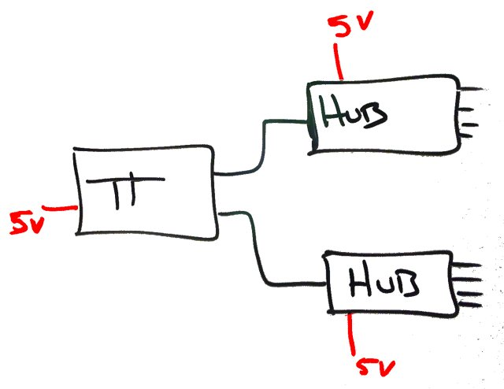

Robot car
For fun, I thought I'd make a robot car with the boy.
During the initial part we'd have a remote control toy that zips around. But it'd also be a step on the way to a Drone Airplane, such as you can find at DIY Drones. Except it wouldn't fall out of the sky.
However, building a robot from scratch is hard. The easiest way to start building a robot is to buy a robot. The second easiest way is to buy and RC car and put some custom electronics in, and call it a day.
For a couple of reasons, I bought a kit that uses regular servos and regular RC controls, rather than (say) a cheaper RC car from Target that uses odd-ball parts. It's easier (and cheaper) to buy motor controls and servos from RC shops, such as Hobby King. Controlling these from a microcontroller is fairly straightforward.
We finished the car this spring (ignoring the outer shell):
 

Alas, the boy loses interest pretty quick. We drove it and he lost interest.
How will it all work?
Then, in the middle of summer (and at long last) a Raspberry Pi computer arrived. (Another thing I bought to try to engage him, esp since he was interested for moment). After an initial test run, it became clear that the Raspberry, will make it easy to prototype the robot brains.
First, let's get an idea of what peripherals I'll toss into the mix.

Optionally, I'm considering a RC override, possibly to recover the robot (more important if its a plane), possibly to train it.

These will need special power considerations. For starters, it's just plain sense to have a fuse, and tilt switch in the mix to cut the motor off it the vehicles tumbles or shorts. The processor also has the ability to cut the power, although this is more of a courtesy.

To start it up, we have a momentary push button to bypass the relay, so that the system can power up. However, the push button has a capacitor to prevent it from keeping the system on if it gets stuck.
The servo motors need their own power supply(s): 
And the Raspberry Pi and USB Hubs need their own power supplies. 
There seems to be many issues with the Raspberry Pi powering, so this will have be checked carefully.
The Hubs need to be powered. The Raspberry Pi USB ports are only supplied with 100mA. Many peripherals need more, some peripherals need up to 500mA. Hence the power supply